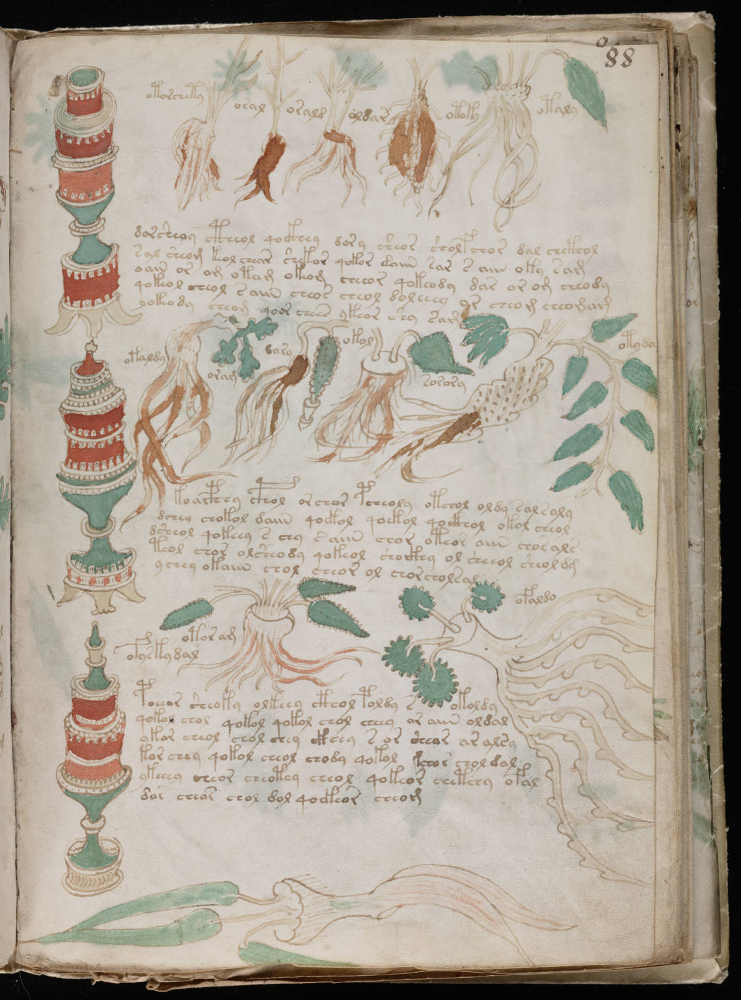

f88r
1otorchety2oral3orald4oldar5otoky6otaly7dorsheoy ctheol qockhey dory sheor sholfchor dal chckhod8sal sheom kol chear shekor qokor daiin sar raiin oky sam9oain or om otam okeom cheeor qokeody dar or om cheody10qokeol cheol saiin cheos cheol doleeey or cheom cheomam11yokeody cheom qoor chees ykeor shy sam12otaldy13oram14dary15okol16sorory17otyda18koaiphhy cphol orchor pcheoly otchol oldy sal saly19dchey chokol daiin qoekol qoekol qockhoy okol cheol20dsheol qokeey s chy saiin chor oteor aiin chosals21teol chor olsheody qokeol shoikhy ol sheeol sheol dg22ychey okaiin chol cheor ol chorcholsal23ofyskydal24otor am25ofaldo26poeeas sheoky olkeey cthol poldy sokoldy27qokol chol qokol qokol chol cheey or aiin oldal28ykar cheol chol chey ckhey s or shear ar alsy29kor chey qokol cheol chody qokol kchor chol dal30ykeeey cheor cheotey cheol qokeor chetchy ofal31dar chear chol dol qoekeor cheom
